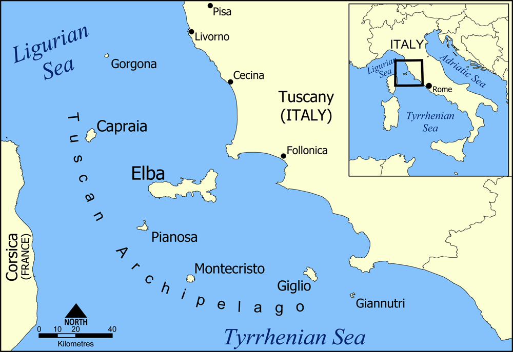

|
The island itself is made up of slices of rocks which once formed part of the ancient Tethyan seafloor.
These rocks have been through at least two orogenies, the Alpine orogeny and the Apennine orogeny.
The second of these two events was associated with subduction of the Tethyan oceanic crust underneath Italy and the obduction of parts of the ancient seafloor onto the continents.
Later extension within the stretched inner part of the Apennine Mountains caused adiabatic melting and the intrusion of the Mount Capanne and the La Serra-Porto Azzuro granitoids.
These igneous bodies brought with them skarn fluids which dissolved and replaced some of the carbonate units, precipitating iron-rich minerals in their place.
More recently, high-angle faults formed within the tectonic pile, allowing for the migration of iron-rich fluids through the crust.
The deposits left behind by these fluids formed the island's rich seams of iron ore.
|

|